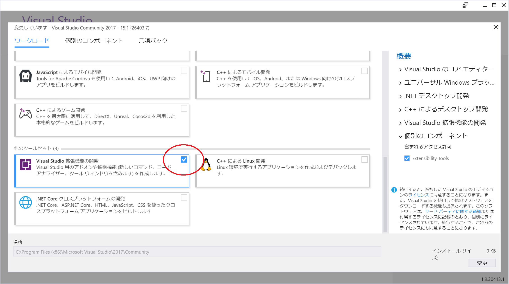
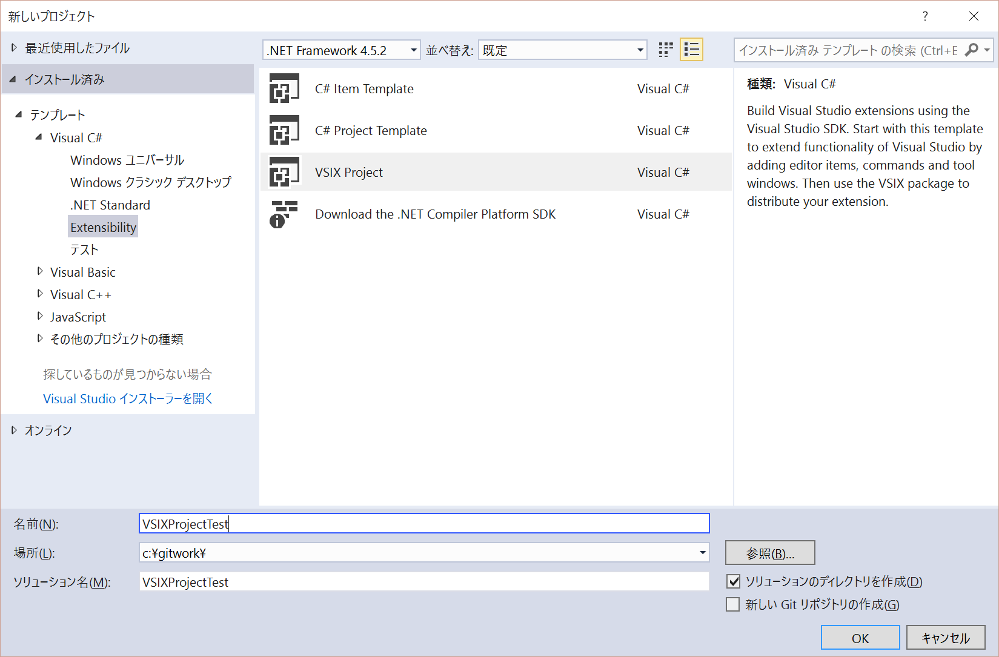
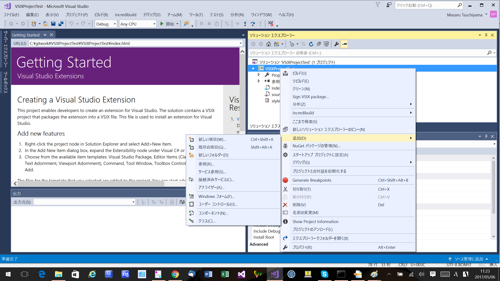
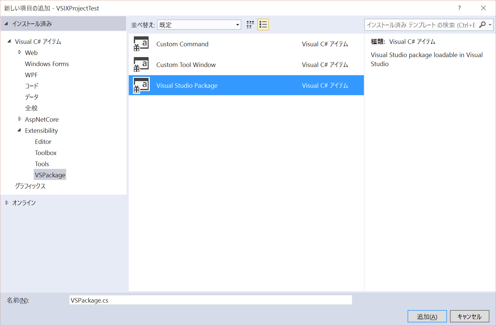
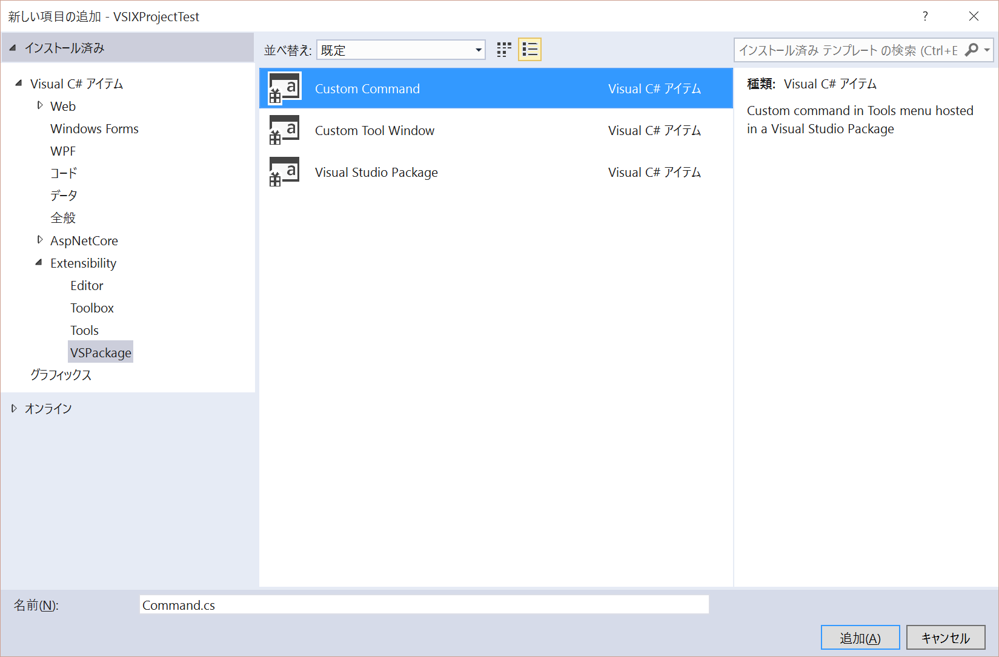
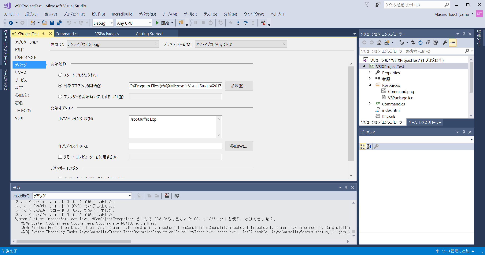

$Date: 2017-05-06 11:44:52 +0900 (2017/05/06 (土)) $
$Revision: 1101 $
Visual Studio プラグインの作り方 on Visual Studio 2017
下準備
Visual Studio 2017
をインストールします。
インストールするときに "Visual Studio 拡張機能の開発" にチェックを入れます。
インストール後も変更できます。

プロジェクトの作成
ファイルメニューから新規作成 -> プロジェクトを選びます。
Visual C# の Extensibility の VSIX Project を選びます。

Visual Studio Package の追加
ソリューションエクスプローラでプロジェクトを右クリックします。
その後、追加を選び、新しい項目を選びます。

Visual C# アイテムの Extensibility の VSPackage を選んだ後、Visual Studio Package を選びます。

Custom Command の追加
ソリューションエクスプローラでプロジェクトを右クリックします。
その後、追加を選び、新しい項目を選びます。
Visual C# アイテムの Extensibility の VSPackage を選んだ後、Custom Command を選びます。

ビルド
ビルドメニューからソリューションのビルドを選びます。
デバッグ実行
F5 を押してデバッグ実行を行うと実験的なインスタンスというタイトルで Visul Studio 2017 が起動してきます。
これはデフォルトで外部プログラムの開始で
"C:\Program Files (x86)\Microsoft Visual Studio\2017\Community\Common7\IDE\devenv.exe" が設定されていて
コマンドラインに "/rootsuffix Exp" が設定されているためです。
自由にブレークポイントを設定してステップ実行できます

インストール
ビルドで生成された vsix ファイルをダブルクリックしてインストールできます。